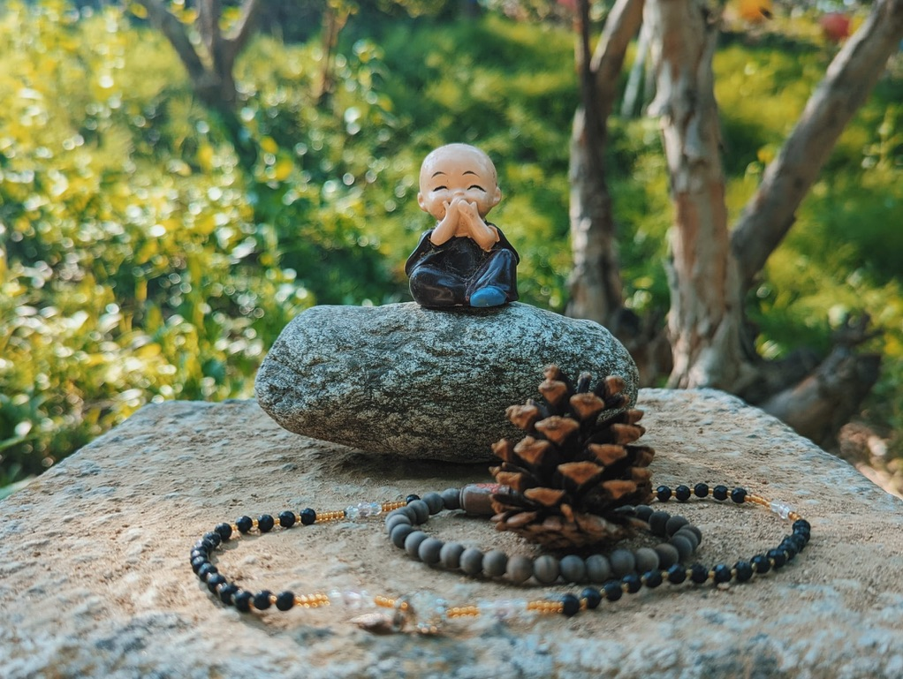
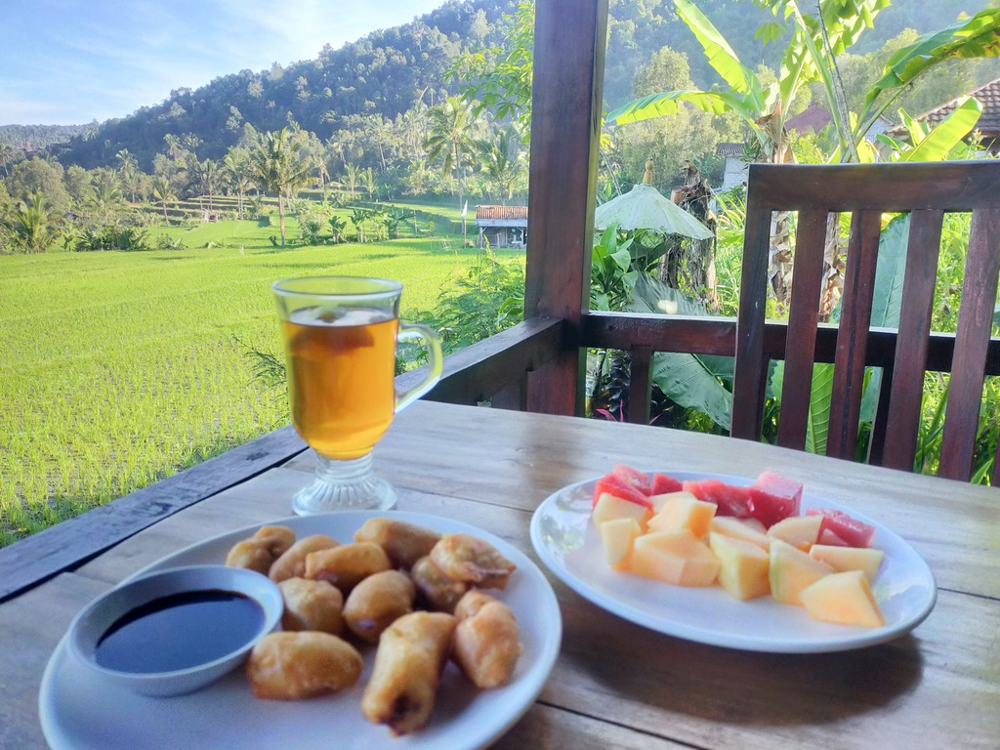
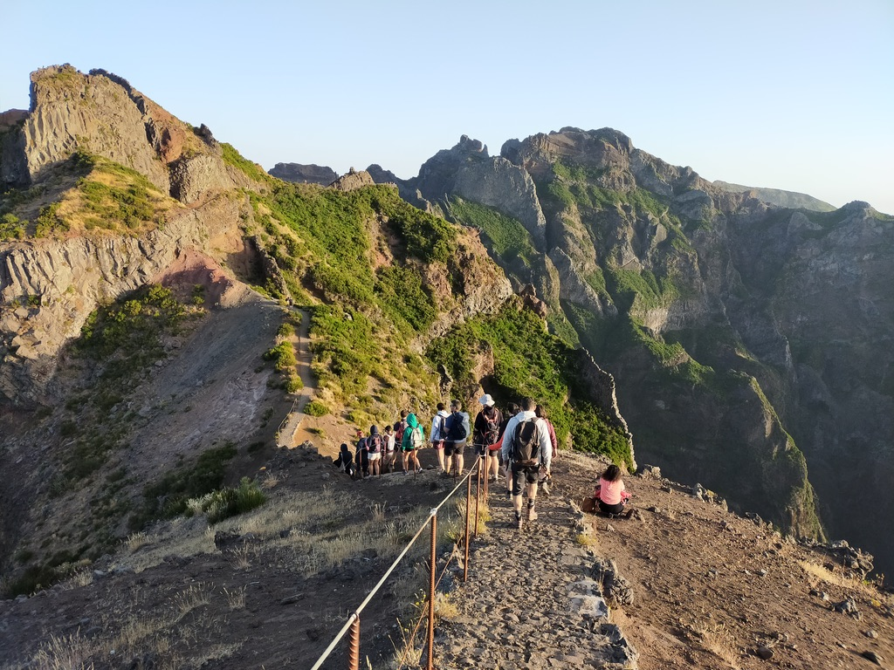
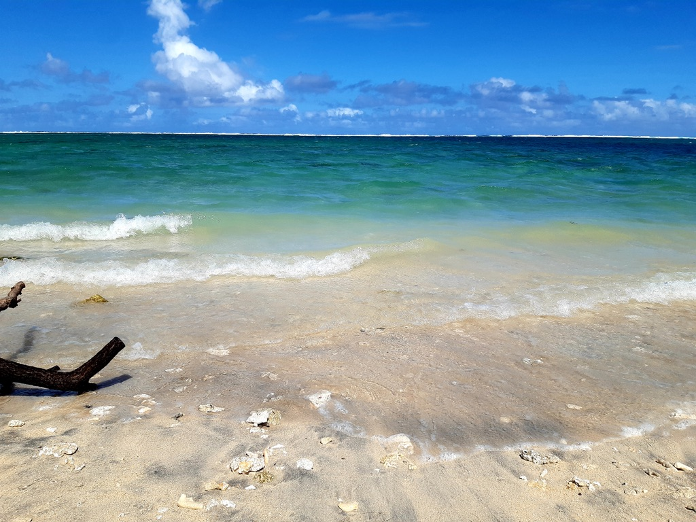
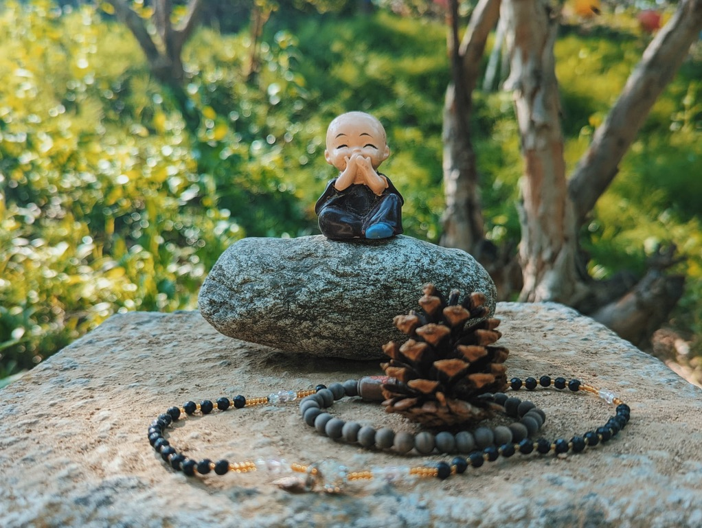
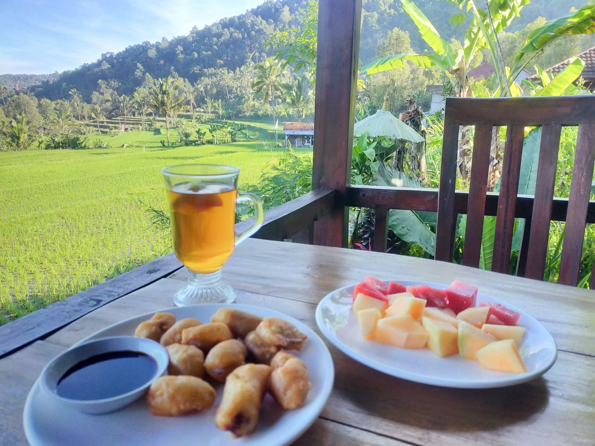
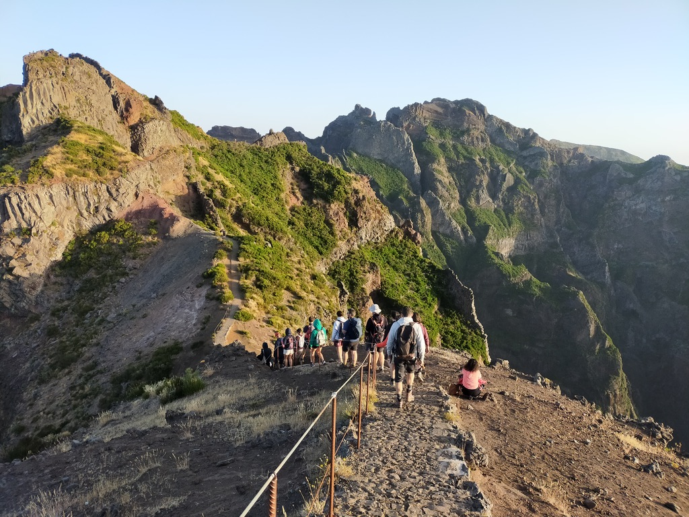
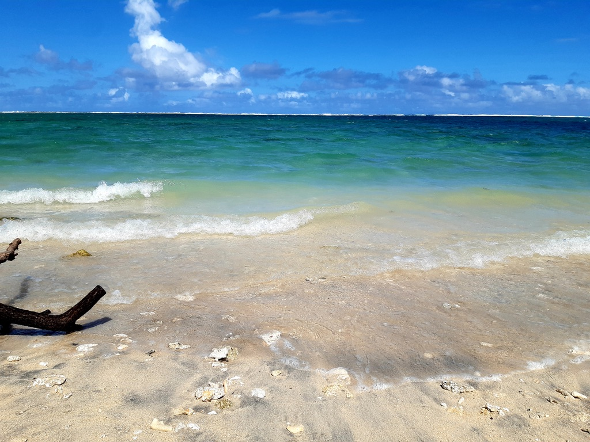

Ce que j'apprécie 🫶
J'aime voyager pour découvrir de nouveaux horizons et m'imprégner de différentes cultures.
Chaque voyage est une opportunité unique de rencontrer des personnes fascinantes et d'élargir mon cercle d'amis.
De plus, j'adore tester de nouveaux plats et explorer la diversité culinaire du monde, savourant chaque saveur et chaque expérience gastronomique.
 






